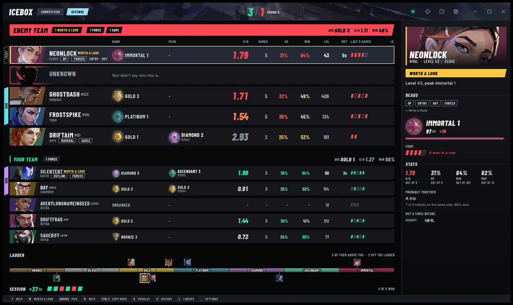
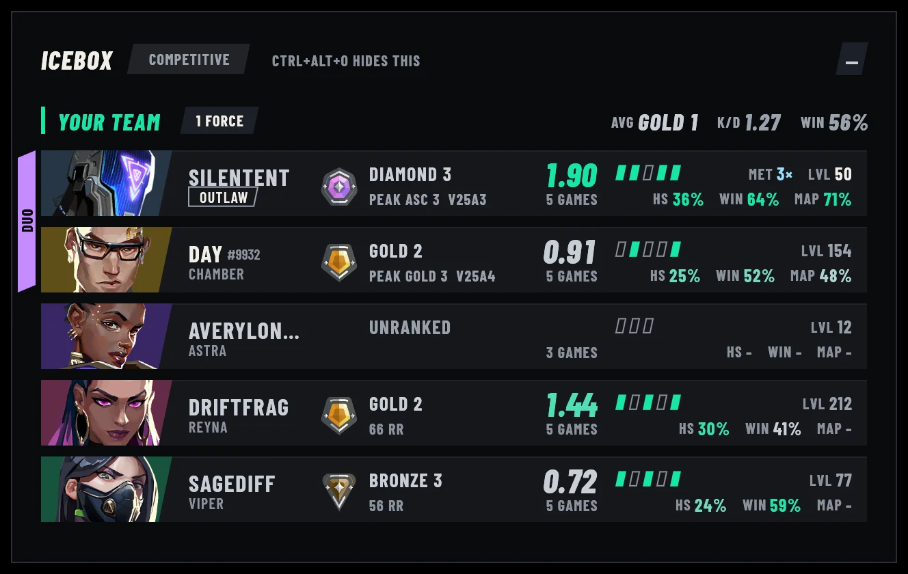
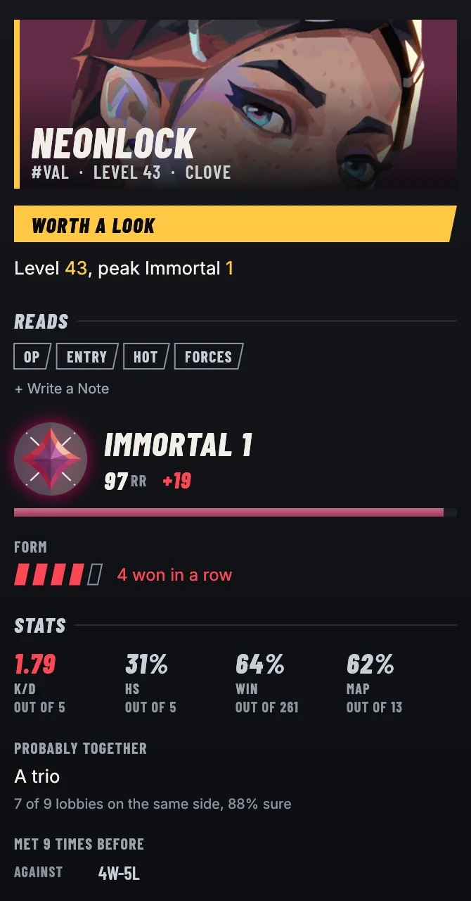
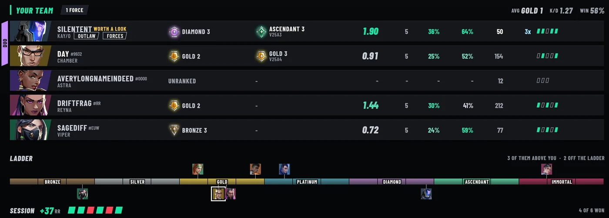
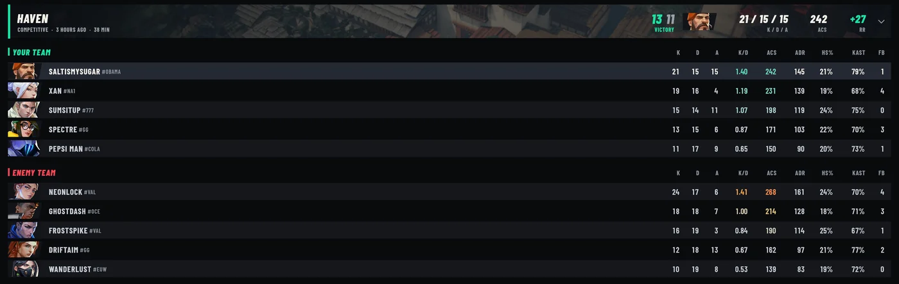
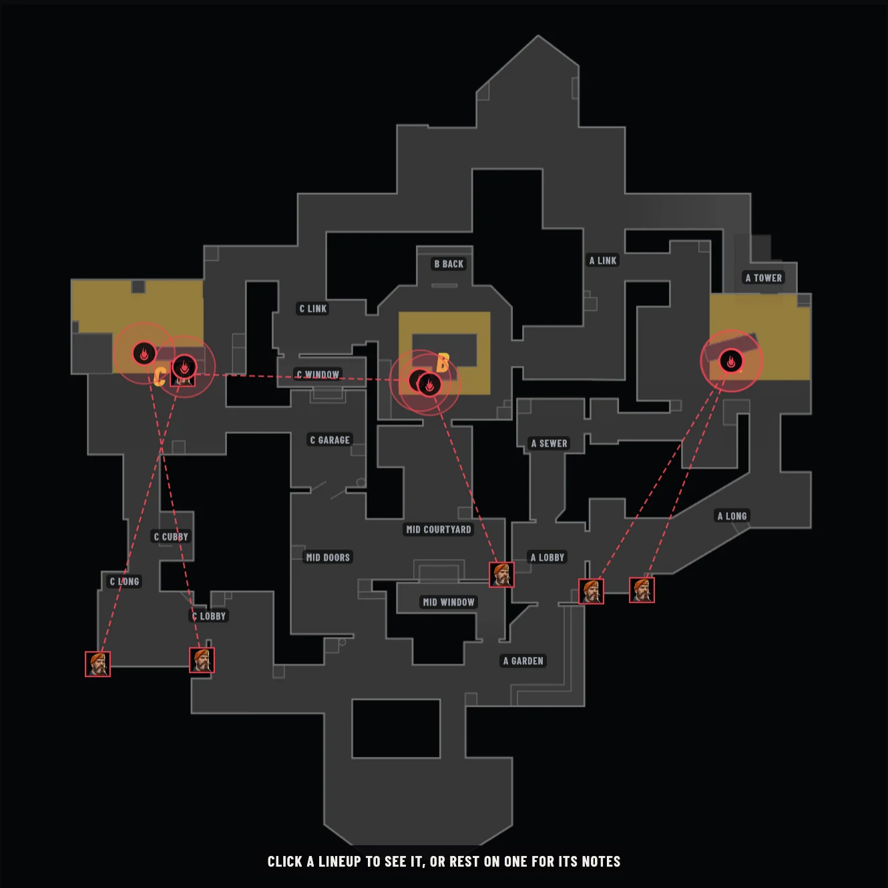
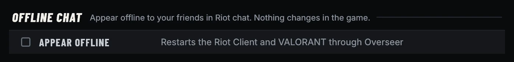

ValorantOverseer
Every player in your match, ranked before round one.
Rank, peak rank, K/D, headshot and win rates and who queued together, for all ten players, in a window beside VALORANT. Free for Windows 10 and 11, and it runs on your PC with no account.

Agent Select
Your Team Before You Lock In
As soon as agent select opens, a small window sits over the game with your team's ranks, peaks, K/D, recent form and parties. It goes away once the match loads.
It never takes the focus from VALORANT, and it shows over the game's default borderless window. Ctrl+Alt+O shows or hides it at any time, and it can sit in any corner.

Match Loads
Every Player, Ranked
The whole lobby goes on one board, with each player's rank, peak rank and the act they reached it, K/D, headshot rate, win rate, level, RR and their last five games. The other team sits on top, since they're the five you can't see in game. Press ? for a Help screen that explains every colour and mark on the board.
| No. | Player | Rank | K/D | HS | Win | Lvl |
|---|---|---|---|---|---|---|
| 1 | NeonLockCloveWorth a Look | Immortal 1 | 1.79 | 31% | 64% | 43 |
| 2 | UnknownRiot didn't say who this is. | |||||
| 3 | GhostDash #OCEPhoenixDuo | Gold 3 | 1.71 | 32% | 49% | 406 |
| 4 | FrostSpike #VALYoruDuo | Platinum 1 | 1.54 | 30% | 45% | 134 |
| 5 | DriftAim #GGSkye | Gold 1Peak Diamond 2 | 2.93 | 25% | 52% | 181 |
| No. | Player | Rank | K/D | HS | Win | Lvl |
|---|---|---|---|---|---|---|
| 1 | SilentEntKAY/OWorth a Look Duo | Diamond 3Peak Ascendant 3 | 1.90 | 36% | 64% | 50 |
| 2 | Day #9932ChamberDuo | Gold 2Peak Gold 3 | 0.91 | 25% | 52% | 154 |
| 3 | AVeryLongNameIndeedAstra | Unranked | 12 | |||
| 4 | DriftFrag #RRReyna | Gold 2 | 1.44 | 30% | 41% | 212 |
| 5 | SageDiff #EUWViper | Bronze 3 | 0.72 | 24% | 59% | 77 |
The players on Plate 1, as a programme would set them.
Buy Phase
Peak, Form and Reads

Rest the pointer on a player and the panel opens on their card, their rank with its RR, their form over recent games, the agents they main and a rating line across their last ten. It also lists who they play with most, and how often they win together.
Reads sum up their habits from those matches, like whether they save or force on a bad round, or only ever play one agent. An account that looks like a smurf is flagged Worth a Look, with the reasons beside it. Notes and tags you leave on a player come back the next time you meet them.
Who Queued Together
Parties get a tab down the side of their rows, so a duo or a trio reads at a glance. The ladder under the board puts everyone in the lobby at their rank, and your session's RR keeps count of the night.

Full Time
Your Match History
Your recent games with the score, your K/D/A, ACS and the RR you won or lost. Open one for the full scoreboard, with ADR, headshot rate, KAST and first bloods for all ten players.

Between Games
Lineups for Every Map
Drag from where you stand to where it lands, pick the agent and the ability, and add a clip from a YouTube link or a video of your own, trimmed right in the app.
Draw on the map, check a turret's line of sight, and share a map's lineups as a code to paste in chat.

Appear Offline
Hide from your friends in Riot chat without changing anything in the game. Overseer restarts the Riot Client and VALORANT to do it, so finish your match first.

Ground Rules
It reads the Riot Client, not the gameYour match comes from the Riot Client's own local API on your PC, the same one the client uses to show your party.
It never plays for youIt never reads VALORANT's memory, and it never clicks, types or locks in an agent. The overlay is an ordinary window with no hooks into the game.
It asks Riot for match data onlyIt asks Riot's servers for the recent games of the players in your match. Agent and map art comes from valorant-api.com, and nothing about you is sent there.
No account and no serverThere's nothing to sign up for, no server of its own and no tracking. Your notes, lineups and history stay on your PC.
It never updates itselfOnce a day it asks GitHub which version is newest, and the footer says when one is out. Settings turns that check off.
It stays out of the game's wayThe window takes about 175 MB of memory, draws nothing while you leave it alone, and asks for the integrated GPU so VALORANT keeps the faster one.
Admission Free
Free
Setup installs Overseer into AppData with its own copy of Python, so it needs no admin rights. It also installs yt-dlp and FFmpeg with winget for lineup clips. A new version's setup updates in place and keeps your region, lineups, notes and settings, and it uninstalls from Settings, then Apps.
Download Valorant-Overseer-Setup.exe from the latest release on GitHub.
Open it and pick your region. If Windows says it protected your PC, click More info, then Run anyway.
Open VALORANT and join a lobby. Overseer fills in as soon as there's a match to show.
Questions
Is Valorant Overseer free?
Yes. It's free for anything noncommercial under the PolyForm Strict License 1.0.0. You can't sell it, use it in a business, share copies of it or publish a changed version.
Does it need an account, or send my data anywhere?
No account. Overseer talks to the Riot Client on your PC and to Riot's servers for match data, and fetches agent and map art from valorant-api.com without sending anything about you. Once a day it asks GitHub which version is newest, and Settings turns that off. It has no server of its own and no tracking.
Does it read VALORANT's memory or play for me?
No. It reads your match from the Riot Client's own local API. It never reads the game's memory, and it never clicks, types or locks in an agent.
Can I get banned for using it?
Overseer never touches the game, but whether third-party tools are allowed is Riot's decision, so it can't promise anything either way.
Does it work on Mac or Linux?
No. It's a Windows app, for Windows 10 and 11.
How do I update it?
When a new version is out, the footer says so. Download that version's setup and run it. It updates in place and keeps your region, lineups, notes and settings. Overseer never downloads or installs anything by itself.
How do lineup clips work?
Paste a YouTube link or pick a video on your PC, trim it in the app, and Overseer cuts the clip with yt-dlp and FFmpeg, which setup installs with winget.